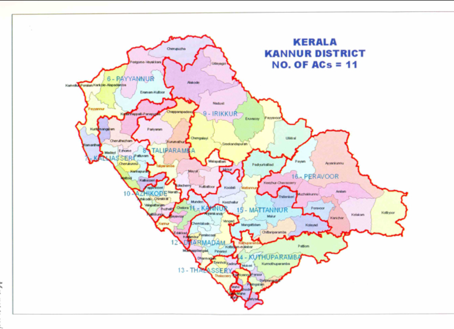

Kannur
Tourist Destinations
Muzhappilangad Beach
This beach is the longest Drive-In Beach in Asia and is featured among the top 6 best beaches for driving in the world in BBC article for Autos.[3][4] Muzhappilangad is the only Asian beach featured in the list. Even though Goa has many beautiful beaches, it does not have a Drive-in beach. It is considered as the longest drive-in beach in Asia.[5] The beach festival is celebrated in the month of April and it is one of the important tourist attraction in the district of Kannur in Kerala. The youth also try many driving stunts in cars like drifting and wheeling in bikes as this is a paradise for driving along the shore. There is an unpaved road winding through coconut groves leading to the beach. To get to this road, if you are driving from Tellicherry towards Kannur, take the left turn just before the railway over bridge (first railway crossing) you encounter after crossing the Moidu bridge. The beach is about 3.8 kms long and curves in a wide area providing a good view of Kannur on the north. Local laws allow beachgoers to drive for a full 3.4 kms directly on the sands of the beach. The beach is bordered by black rocks, which also protect it from the stronger currents of the ocean. These rocks provide habitat for Blue mussel, a delicious seafood. Beach attracts bird-watchers from far off places as hundreds of birds flock here during various seasons.


Palakkayam Thattu
Palakkayam is a village in the Palakkad district, state of Kerala, India. It is administrated by the Thachampara grama panchayath.[clarification needed][1] Palakkayam is about 16 km from Siruvani Dam Eco tourism spot, connected to Edakkurussi on Palakkad-Kozhikode National Highway about 33 km from Palakkad and 120 km from Kozhikode. Kanjirapuzha Dam, a masonry earth dam built for providing irrigation is located is located about 6 km from Palakkayam. The nearest airport is Coimbatore, about 100 km and nearest Rly Stn is Palakkad Jn, about 30 km.the nearest hospital assumption hospital kanjirapuzha.nearest school carmel hss palakkayam.
St Anchelo
n 1498, during Vasco da Gama's visit to India, the local Kolathiri king granted the land to Portuguese to build a settlement in present-day Kerala. On 23 October 1505, he gave the Portuguese leader Francisco de Almeida the permission to build a fort at the site. The construction activity began the very next day, on 24 October 1505, when Goncalo Gil Barbosa - the Portuguese factor of Cannanore (Kannur) - laid the foundation stone. The construction of the wooden fort was completed on 30 October 1505: its first Captain was Lourenco Britto, who led a garrison of 150 Portuguese men, and controlled two ships in the sea. After the fort was completed, Almeida began using the title "Viceroy", and in 1507, he started the construction of a stone fort at the site.[1]